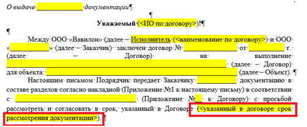

Шаг 1. Согласно схеме ОУП, фиксируем в таблице дату начала этапа. Ей считается дата оповещения от финансового отдела об оплате промежуточного платежа или загрузки ПД в экспертизу, согласно договору с экспертизой (договор необходимо запросить у Заказчика).
Шаг 2. Согласно схеме ОУП, фиксируем в таблице дату конца этапа. Ей считается дата получения положительного заключения экспертизы. Если экспертиза продлевается, то необходимо обосновать увеличение срока договором о продлении экспертизы (запрашивается у Заказчика).
Шаг 1. Согласно схеме ОУП, фиксируем в таблице дату начала этапа. Ей считается дата передачи разработанной ПД.
Шаг 2. Согласно схеме ОУП, фиксируем в таблице дату конца этапа. Ей считается дата указанная в теле письма при передаче ПД
При наличии вопросов, которые влияют на отработку замечаний, в адрес Заказчика направляется письмо с перечнем вопросов и недостающих ИД (при необходимости) по шаблону.
Датой конца этапа является дата, указанная в теле письма, не позже которой Заказчик должен предоставить ответ.
В случае отсутствия ответа на письмо с перечнем вопросов и недостающих ИД, в адрес Заказчика необходимо направить письмо о смещении сроков выдачи документации.
Датой конца этапа является дата смещения срока выдачи ПД, ввиду отсутствия ответов.